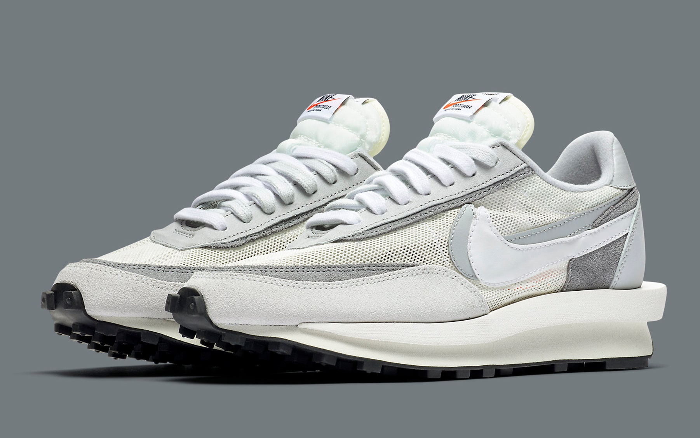
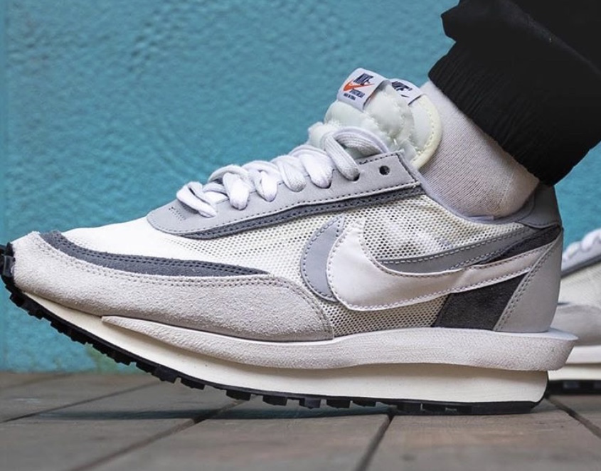

Читосе Абе из sacai и Хироши Фудживара из Fragment уже несколько раз сотрудничали друг с другом и с Nike. На этот раз они представляют новую версию модели LDWaffle, в которой объединены два легендарных силуэта: Waffle Daybreak и LDV. В этой версии сочетаются фирменные элементы обоих брендов, такие как двойные язычки, шнурки и логотип Swoosh, в котором отражены логотипы всех трех моделей. Фудживара выбрал особый оттенок серого — Light Smoke Grey — для сетки и первоклассной замши верха, чтобы создать эффектный минималистичный образ. Благодаря мастерской точности в дизайне и замысле, это стилистическое сочетание — современная классика.
 